R&D Engineering at a Fusion Startup
Zap Energy is a Seattle-area fusion energy company developing a sheared-flow stabilized Z-pinch fusion approach. As an R&D Engineering Intern across two terms (Summer 2023 and Summer 2024), I worked on three distinct engineering systems directly supporting fusion reactor prototype development and validation: precision fuel injection component machining, mechanical force testing infrastructure, and thermal cycling control systems.
Each system demanded a different engineering discipline — from tight-tolerance CAD and DFM for machined components, to hardware/software co-design for instrumentation rigs, to embedded control systems with safety interlocks. Python analysis pipelines were developed alongside each system to automate data processing and reduce evaluation time by 40%.
±10-Micron Tolerance Components
Designed and coordinated the fabrication of precision fuel injection components for fusion reactor prototypes. The fuel injection system demands extreme dimensional accuracy — components must mate reliably at ±10-micron tolerances to ensure consistent fuel delivery geometry and prevent leakage under operating conditions.
- Full 3D models with complete GD&T annotation for unambiguous manufacturing intent
- Tolerance stackup analysis to verify assemblies meet system-level requirements
- Design for Manufacturability (DFM) reviews with machinists to optimize tool paths
- Iterative design reviews incorporating machinist feedback for 5-axis CNC optimization
- Finite Element Analysis in SolidWorks Simulation for thermal stress and deformation
- Operating temperature validation at 200°C for material selection and geometry refinement
- Stress concentration identification and geometry optimization to prevent fatigue failure
- Boundary condition definition matching actual assembly constraints
- Coordinated with machinists on 5-axis CNC programming for complex geometry
- First article inspection using CMM verification of critical dimensions
- Iterative design-fabricate-measure loop to converge on ±10-micron tolerance requirements
- Material selection balancing machinability, thermal properties, and compatibility
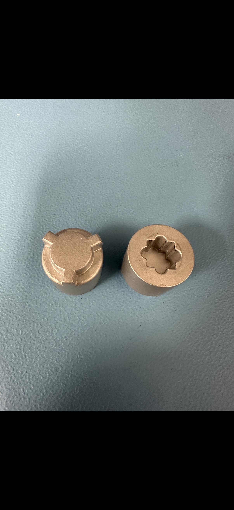
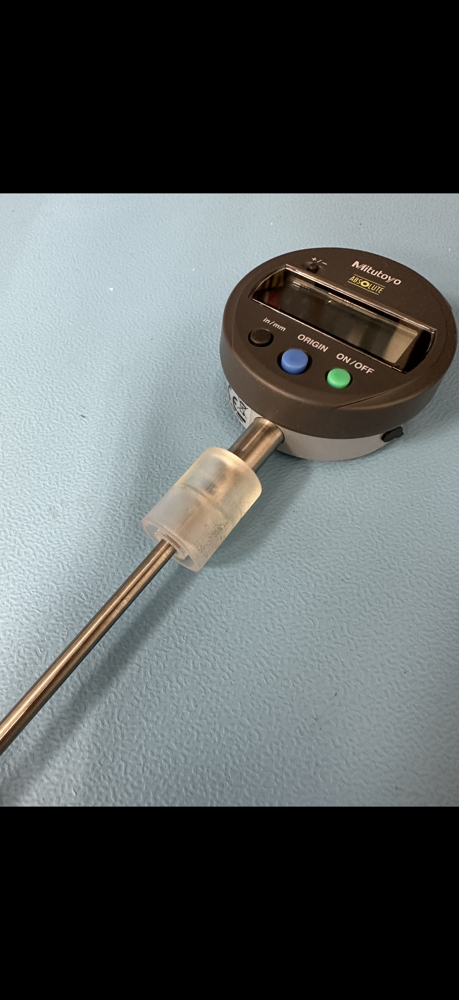
26 kN Test Rig with Custom DAQ
Designed and built a 26 kN mechanical force testing rig for evaluating fusion reactor components under representative loading conditions. The system required custom data acquisition hardware, signal conditioning, and LabVIEW software to capture and analyze force-displacement data with sufficient fidelity for engineering decisions.
A Python analysis pipeline was developed alongside the LabVIEW control layer to automate post-processing of test data — computing derived metrics, generating standardized reports, and flagging anomalies. This reduced per-test evaluation time by 40% compared to manual analysis.
- 26 kN capacity force frame with custom fixture design for component-specific loading geometry
- Load cell with signal conditioning for accurate force measurement across the full range
- K-type thermocouples at multiple measurement points for thermal state monitoring
- LVDT displacement sensors for precision stroke measurement
- National Instruments DAQ hardware for multi-channel synchronized data acquisition
- LabVIEW VI for real-time display, test control, and data logging
- Configurable test profiles: ramp, step, hold, and cyclic loading sequences
- Python post-processing pipeline for automated analysis and standardized reporting


Arduino PID Thermal Control at ±0.5°C
Developed a closed-loop thermal cycling system for fusion reactor component qualification testing. Components must survive repeated thermal cycles from ambient to 250°C with controlled ramp rates — simulating the thermal environment of reactor operation.
The system uses an Arduino microcontroller running a PID control algorithm to drive heating elements and achieve ±0.5°C steady-state precision at 250°C. A custom PCB was designed with safety interlocks — over-temperature cutoffs and watchdog timers — to prevent runaway conditions in an unattended test environment.
- Discrete PID algorithm tuned for the thermal mass and heater dynamics of the test fixture
- Ziegler-Nichols tuning method as starting point; refined empirically for ±0.5°C precision
- Configurable setpoint profiles for multi-step thermal cycle programs
- Serial logging of temperature, setpoint, and control output for post-analysis
- PCB designed for Arduino integration with solid-state relay drive, thermocouple signal conditioning, and indicator LEDs
- Hardware over-temperature interlock: independent comparator circuit cuts power if temperature exceeds safe limit
- Software watchdog timer resets control loop if main loop hangs
- Clearly labeled status indicators for operational state, alarm, and fault conditions
- Multiple K-type thermocouples for spatial temperature uniformity monitoring across the component
- MAX31855 cold-junction compensated thermocouple amplifier ICs for accurate readings
- Calibration against NIST-traceable reference at multiple temperature setpoints
- Average and max temperature reporting with configurable alarm thresholds
Additional Projects & Lab Work
Beyond the three primary systems, internship work at Zap Energy spanned a range of tasks across the R&D engineering team — from hands-on fabrication and assembly support to data analysis and documentation. The images below capture additional work from across both internship terms.
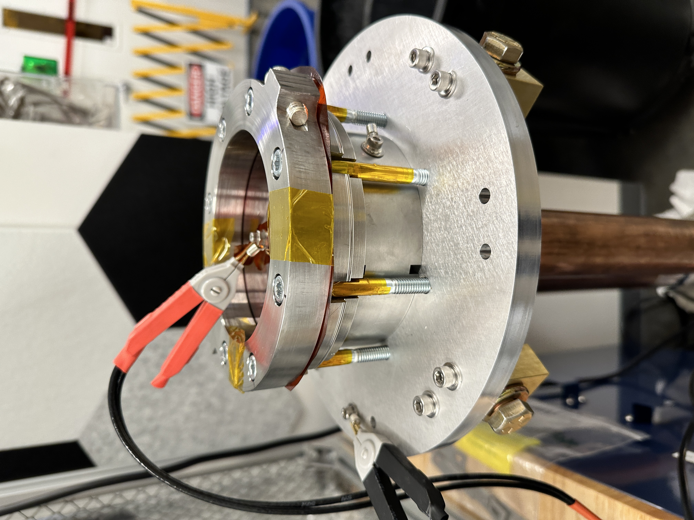
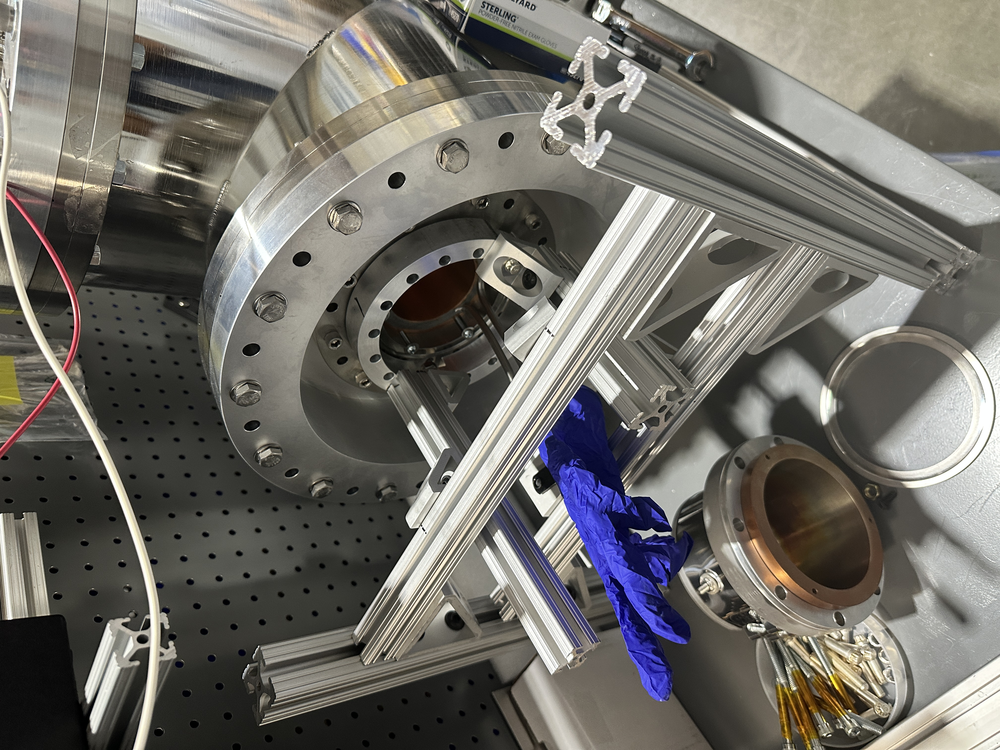
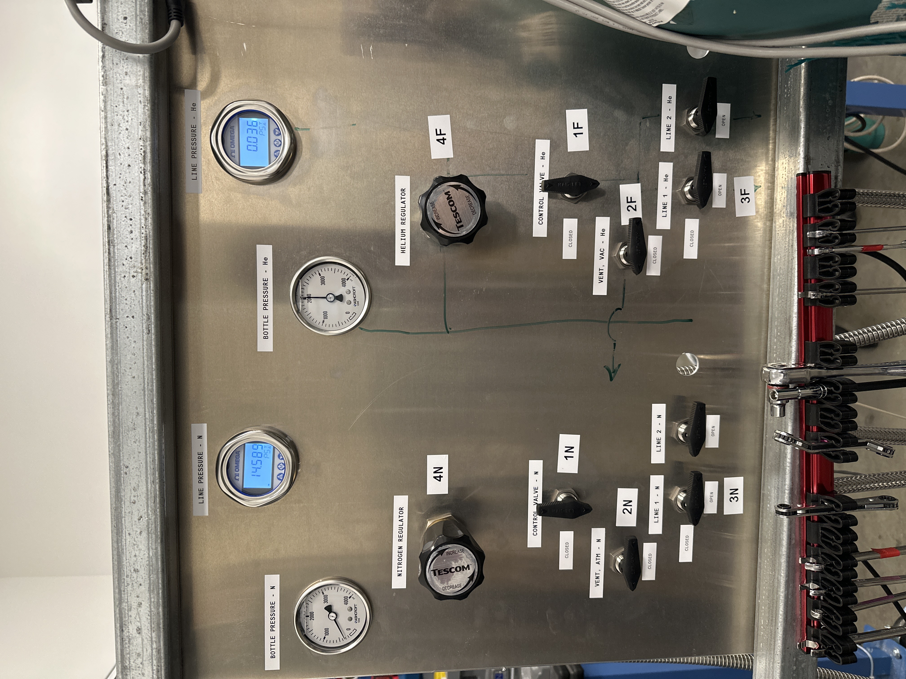
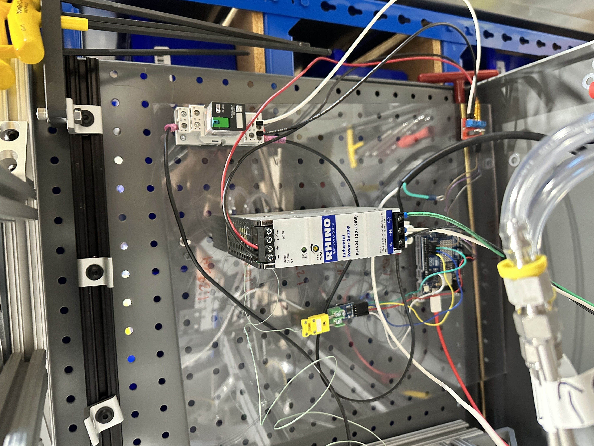
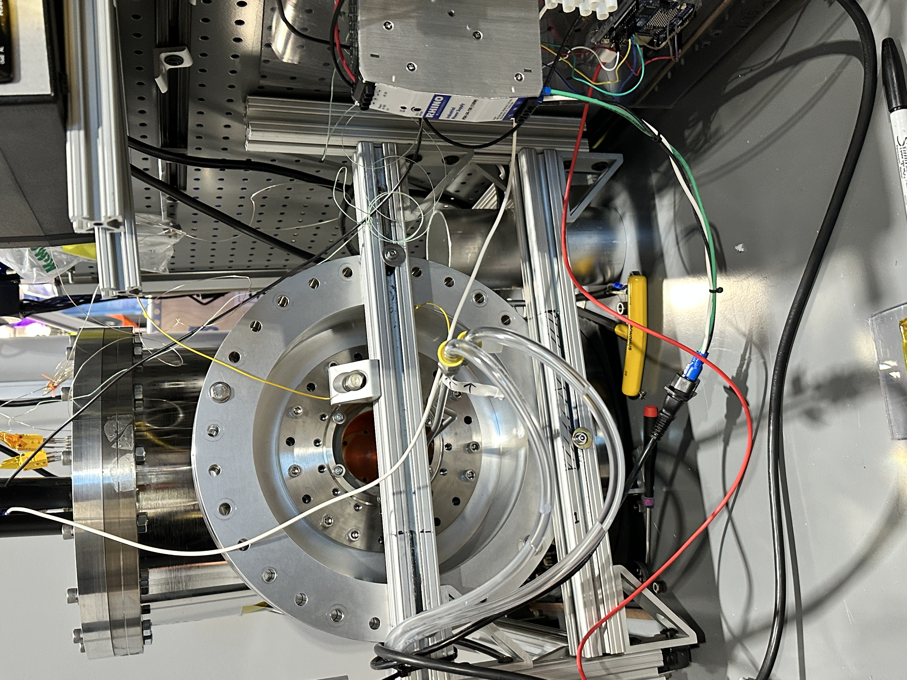
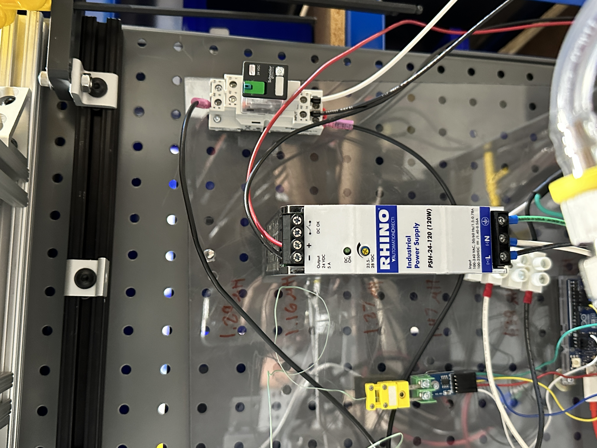
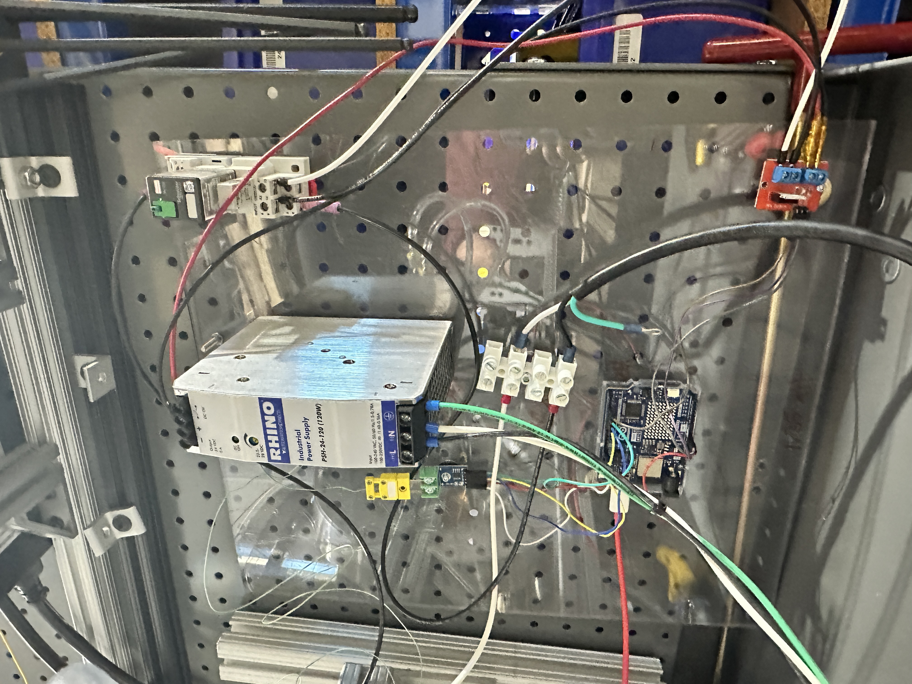

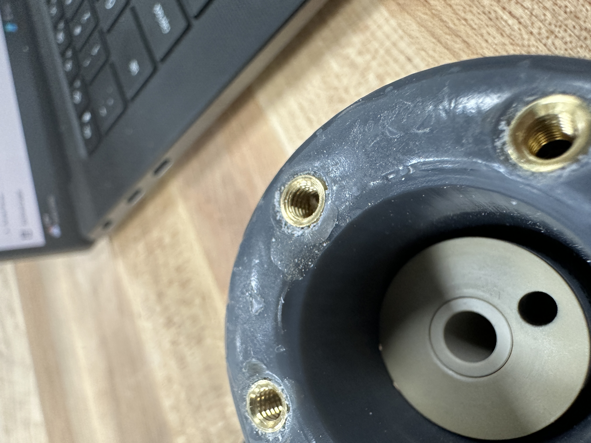
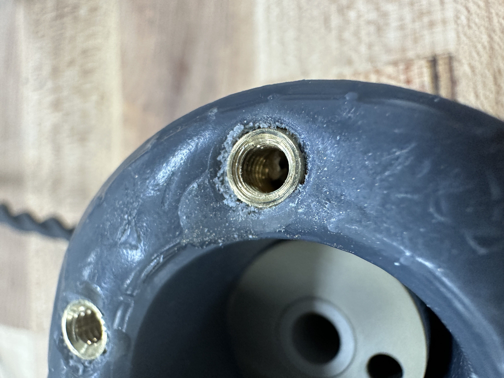
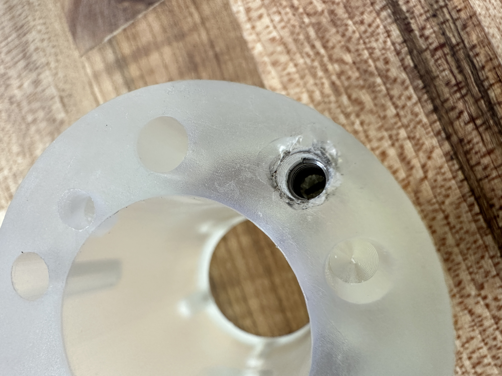
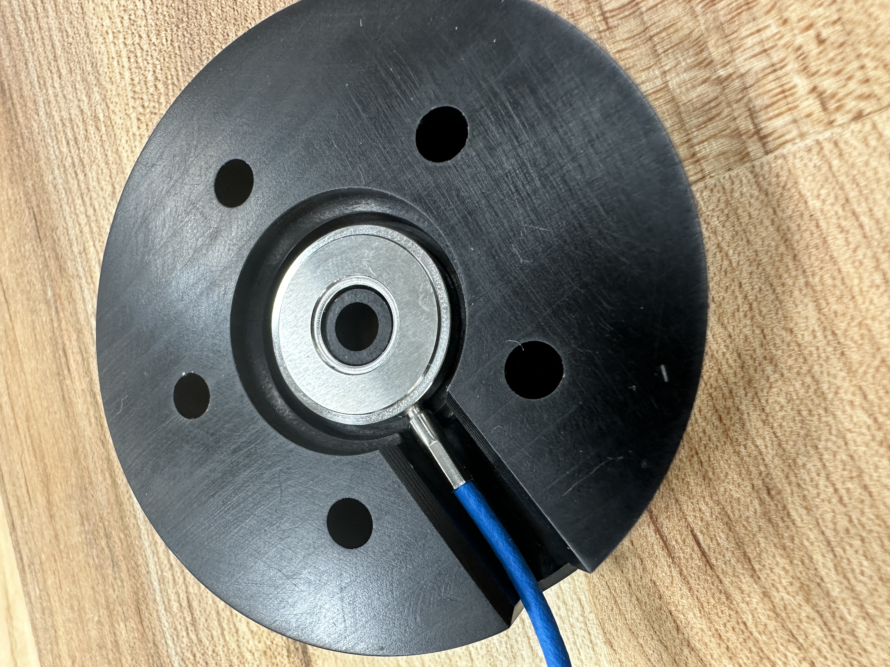
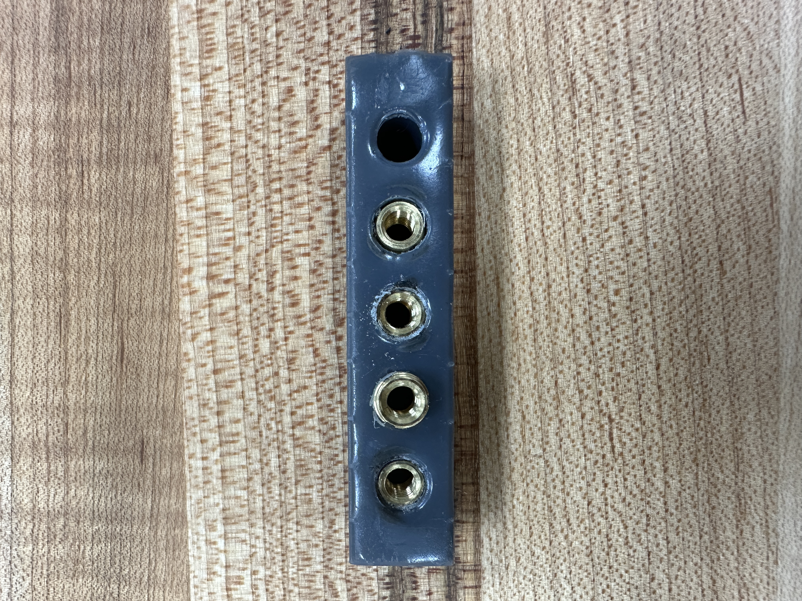